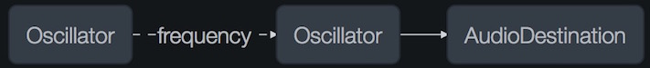
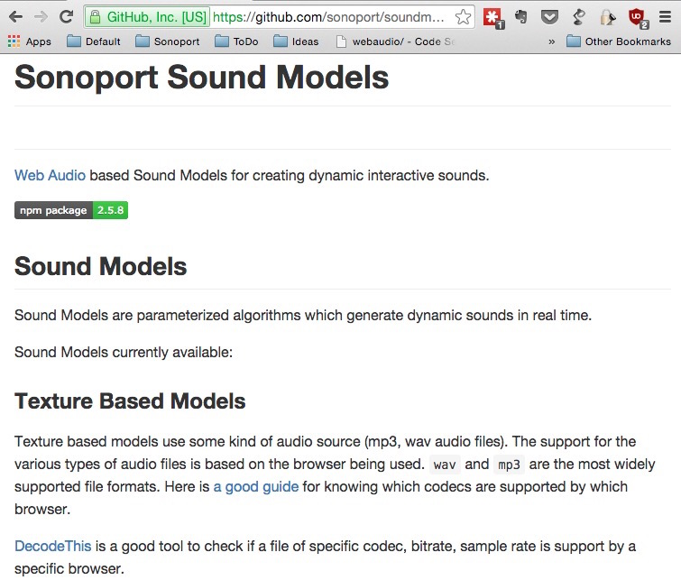

Web Audio
An emerging platform for Audio applications
Geekcamp 2015
Web Audio
An emerging platform for Audio applications
How to make noise on the Web
Geekcamp 2015
Agenda
- What is WebAudio??
- Why WebAudio matters??
- How to use WebAudio??
History
bgsound<object> , <embed><audio>- Audio Data API
- Web Audio API

- ← Flash
- ← HTML5
Philosophy
... include the capabilities found in modern game audio engines as well as some of the mixing, processing, and filtering tasks that are found in modern desktop audio production applications.— W3C WebAudio Draft Spec
 from http://giphy.com/gifs/mario-squish-x2woMnCz4W0Vy
from http://giphy.com/gifs/mario-squish-x2woMnCz4W0Vy
 from https://pixabay.com/p-773215/
from https://pixabay.com/p-773215/
Status
Why
Why Audio on the Web??
Why Audio on the Web??
→ Distribution
- Cross Platform (Mobile, Desktop, etc)
- Share via a URL
- Eg. Animated SoundWorks
Why Audio on the Web??
→ Collaboration
- Real-time control (WebSockets)
- Peer-to-Peer collaboration (WebRTC)
- Eg. SoundTrap
Why Audio on the Web??
→ Expression
- Integration with visual elements
- Integration with interactive elements
- Eg. Allen the Alien
Why in the browser??
→ Open Standards
- Flash sucked at doing real-time audio
- Dependency on Adobe + Browser Vendor
- No visbility/control over changes and features
"signal routing graph paradigm"


JavaScript API
// Create Context and Nodex
var audioCtx = new AudioContext();
var oscillator = audioCtx.createOscillator();
var filter = context.createBiquadFilter();
// Set parameter values
oscillator.detune.value = -400;
filter.type = filter.LOWPASS;
filter.frequency.value = 5000;
// Connect nodes
oscillator.connect(filter);
filter.connect(audioCtx.destination);
Implementation
→ Audio Processing done at a lower level (C++/ASM)

Node : Categories
Native Nodes
- Oscillator
- Filter
- Delay
- ... (many more)
Javascript Node
- ScriptProcessor
Effects
- Gain
- BiquadFilter
- Delay
- Analyser (FFT)
- StereoPanner
- Panner (3D-Panner)
- Convolver
- WaveShaper
- DynamicsCompressor
ScriptProcessor
var sp = context.createScriptProcessor();
sp.onprocess = function (processEvent){
/* fill your own buffer */
var out = autoTune(processEvent.inputBuffers);
processEvent.outputBuffers = out;
}
sp.connect(context.destination);
Nodes : Connections
var context = new window.AudioContext();
var buffer = context.createBufferSource();
buffer.connect(context.destination);
Nodes : Connections
Parameters (AudioParams)
→ Real-time Control of Nodes
filter.frequency.value = 400; // Set Frequency to 400Hz.
filter.Q // Filter Q-value
filter.gain // Filter gain
oscillator.frequency // Oscillator frequency.
oscillator.detune // Detune an oscillator
gain.gain // Set gain value (loudness)
delay.delayTime // Set the delay
buffer.playbackRate // Speed of playbackRate
panner.pan // Left/Right Panning
....
Parameter Automation
playRate.setValueAtTime(2, 5);
frequency.linearRampToValueAtTime(400, 2);
delayTime.exponentialRampToValueAtTime(3.1, 10);
pan.setTargetAtTime(-1, 7.2);
gain.setValueCurveAtTime([0, 1, 0.7, 0.7, 0.5, 0.2, 0], 0, 0.5)

Connect Nodes to Parameters
var osc = context.createOscillator();
var gain = context.createGain();
// Connect oscillator to gain
osc.connect(gain.gain);
// Connect buffer to gain and gain to output
buffer.connect(gain);
gain.connect(context.destination);
AM : Message : Carrier :
Connect Nodes to Parameters
var carrier = context.createOscillator();
var message = context.createOscillator();
// Connect oscillator to frequency
message.connect(carrier.frequency);
// Connect carrier to gain and gain to output
carrier.connect(context.destination);

FM : Message : Carrier :
Tone.js
SoundModels
BabylonJS
Firefox WebAudio Inspector

RecorderJS
Braid
WebMIDI
WebMIDI
Exposes MIDI Hardware to the Browser
from https://www.flickr.com/photos/chris_carter_/3449449295
WebMIDI
If your OS sees it WebMIDI sees it too
WebMIDI
// MIDI Input
navigator.requestMIDIAccess(function(midi){
for (let input of midi.inputs.values()) {
input.onmidimessage = function(event){
console.log("New MIDI Data:", event.data); // UInt8Array
}
}
});
// MIDI Output
midi.output[0].send( [ 0x90, 0x45, 0x7f ] );
// MIDI Input
navigator.requestMIDIAccess(function(midi){
for (let input of midi.inputs.values()) {
input.onmidimessage = function(event){
console.log("New MIDI Data:", event.data); // UInt8Array
}
}
});
// MIDI Output
midi.output[0].send( [ 0x90, 0x45, 0x7f ] );
WebMIDI - Status
 http://webaudio.github.io/web-midi-api
http://webaudio.github.io/web-midi-api
WebMIDI - Status
Demos
NodeSchool (WebAudio)
15th November, 10am-5pm
WebAudio Hack Day
21st November, 11am-9pm